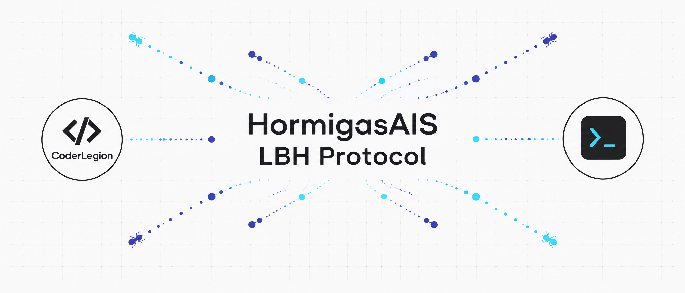

Building the LBH Protocol from Android/Termux: A Sovereign Edge Architecture
12 de septiembre de 2026 | Nodo A16-SanMiguel-SV

1. The Problem: Depending on the Cloud to Validate What's Real
Most content-verification and edge-computing stacks today assume a baseline dependency: a cloud provider, a centralized API, or a third-party service sitting between your data and the claim that it's authentic. That dependency is convenient, but it's also a single point of failure and a single point of control.
The question I kept returning to while building HormigasAIS was simple: can a verification system be sovereign? Not "self-hosted on someone else's cloud," but genuinely independent — running on infrastructure you own, from a device as unconventional as a phone.
2. The Solution: A Node Architecture Built on Sealing, Not Trust
HormigasAIS approaches this with a node-based architecture rather than a service-based one. Three pieces anchor it:
- LBH cryptographic sealing — content is sealed using SHA-256 + HMAC-SHA256, with signed verification that doesn't require calling out to a third party to confirm integrity.
barrera.js— an ethical/logical filter layer (informally, "decromatiza") that sits between raw input and the system's accepted state.humano.js— a small symbolic module declaring the human-language layer of the project:HormigasAIS = {{lenguaje-humano}}.
None of this requires a data center. The full development loop — writing, testing, sealing, deploying — happens from an Android device running Termux.
3. The Implementation: From a 404 to a Working Node
The repository Thrumanshow/HormigasAIS started as a set of governance and symbolic files with no public-facing page — visiting its GitHub Pages URL returned a plain 404.
Getting it live took: enabling GitHub Pages from the main branch root, writing a minimal index.html, and documenting the repo properly — README.md, LICENSE (MIT), GOVERNANCE.md, STATUS.md, and MANIFIESTO.md. The structure deliberately mirrors an earlier project, Chris-BarberShop.
The entire sequence — clone, edit, verify with curl, commit, push, confirm 200 — ran from Termux on a Samsung A16, no laptop involved.
4. The Ecosystem: What's Actually Public
- hormigasais.com — main site
- lbh.hormigasais.com — LBH protocol site
- api.hormigasais.com — Worker API
- docs.hormigasais.com — documentation
- Zenodo DOI: 10.5281/zenodo.17767205
The project operates under an explicit GOVERNANCE.md: forking and use is permitted under license, but no technical action confers official representation or node status without explicit written recognition from the maintainer of record.
VALIDADO_ARTICULO_LBH_TERMUX_20260912_CLHQ
Emitido desde Nodo A16-SanMiguel-SV
Volver al blog